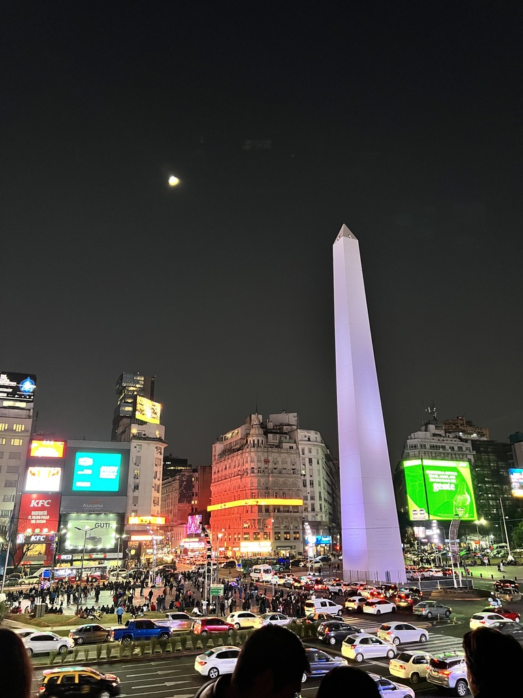

Six months later, I moved to Claremont, California, to study Economics at CMC. I also got to spent 7 months in Milan, Italy in 2025 doing an internship and a study abroad semester.
I grew up in the Argentine countryside between a small town and my family's ranch. Ever since I finished high school, I've never spent too much time in the same place.
Two months after my graduation, I moved to Argentina's capital, Buenos Aires. Whoever said NYC is the city that never sleeps has never been to Buenos Aires. There's always something to do, any time of day.

Six months later, I moved to Claremont, California, to study Economics at CMC. I also got to spent 7 months in Milan, Italy in 2025 doing an internship and a study abroad semester.
In 2024, I got to visit 7 countries for the first time, and I documented some of these trips as part of a journal of over 100 pages that I published later one. Some other trips I just immortalize through fridge magnets.
Out of all the places I've been to, Mexicali in Mexico was objetively the most dangerous one according to the travel advisory website of the U.S. State Dept. However, it was also an incredible experience since I got to interview migrants fleeing violence, seeking asylum in the United States.
Other trips have simply been opportunities to explore and experience new things, like seeing David Guetta live at Ushuaia in Ibiza.
I appreciate seeing life in different parts of the world and experiencing places that I would only see in pictures as a small town kid in Argentina.
I also like visiting historical sites and cities and learning about their history.
I've been to 27 countries so far, and I'd love to expand the list by going to East Asia and Australia next.